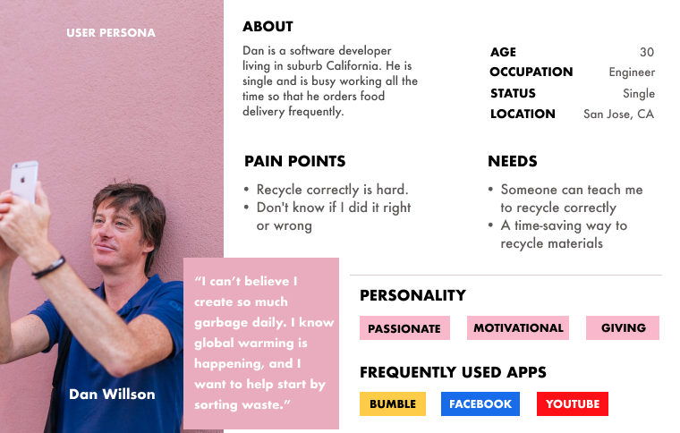
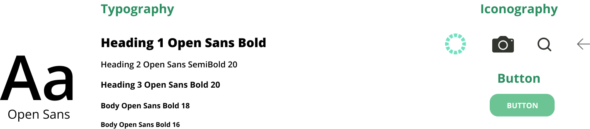

WasteFree
As Global Warming continues year after year. We need to do someting to protect mother earth. I make take-out orders every week, and I usually have a hard time recycling. I asked some of my friends who order deliveries a lot and also have problems sorting different materials since there are so many different types of recycled materials out there. That's why I create this WasteFree app, which can help people recycle better.
Project Duration
1 Month
Project Type
Conceptual,Google UX Deisgn Course Project
My Role
UX Design, Visual Design, Competitive Audit, User Research, Prototyping, Testing

Problems
- People don't know where to find the recycle information
- People are overwhelmed by all the recycling information
Goals
- Encourage people to sort waste
- Educate people to recycle correctly
Design Process

Empathize
I interviewed 5 people to get a better understanding of how do they recycle. From the results, I distilled their behaviors into personas that I got these two type of users.
Define
According to the data I got from 5 people I interviewed. Users' problems didn't change, However, I added One more goal to my app.
Problems Defined After User Research
- People don't know where to find the recycle information
- People are overwhelmed by all the recycling information
Goals Before User Research
- Encourage people to sort waste
- Educate people to recycle correctly
Goals After User Research
- Encourage people to sort waste
- Educate people to recycle correctly
- Find volunteering opportunities
Competitive Audit
Most sustainability-related applications online right now such as iRecycle, Recycle Coach, Recycle! are focused on tracking recycling trucks and locating your nearby recycling bins. I dug into user's reviews from those competitor apps, finding out to keep my app "clean, clear and easy to use". Those user liked features will be the top priorities of this Wastefree app.


Ideate
To refine core features in Wastefree app, I used the Design Sprint method "Crazy Eight" to fast sketch 8 wireframes.


- Scan to sort waste
- Save scanned results
- Recycling news
- Volunteer opportunities
- Find nearby Waste Disposable Center
Core features include:
Wireframes
User Flow
Based on the core features above, below is the user flow when users interact with each feature.

Wireframe Highlights

Big and Clear "Scan" button, easy to get users' attention.

Bookmark icon can remind Users to save searched results to their account

Seach bar in helping users to find nearby disposal center easily

Search bar in Volunteer opportunities page letting users clearly and exactly pick what categories of volunteering works they would like to help
Prototype (Color Palette & Typography)
Moodboard & Color Palette: I picked a couple of words that can express the meaning of eco-friendly to create my moodboard. Words such as Green, Minimalism, Recycle, Sustainable, Earth, Planet.

For Typeface, I chose Futura and DIN Condensed for their simplicity, classicism and modernity.
Before I dive into Visual Design, I did the First Usability Test for Wastefree Wireframes. I interviewed those 5 people to finish a task(based on each user flow), here is what I found and changed.

Conclusion:
- I removed all distracting information and moved the menu from the bottom to the top left corner. Makes the landing page clean and clear.
- During my observation of the User interview, I noticed that users only scan materials when they are not sure which material is recyclable, they had never clicked the "Similar Materials", so I removed it to keep the app simple.
- During User interview, 3 users wish to add registered volunteering events to user account, so that I added "Registered Volunteering" under my account.
- Users wish they could save the disposal center in their account so that they can easily find it next time.
Before

After

Before

After

Before

After

Before

After

High-fidelity Prototype(Mockups)
Mockups(Video)
More Mockups

Testing
I interviewed those 5 people who did my First Wireframe Usability Testing again. They were all able to finish all tasks I asked them to do. I know to create a Minimum Viable Product, I need to increase my user scale, that will be the next step.
What I learned
This is a very exciting application for me because I think recycling is a real issue we need to solve. This project helped me realize First, what a designer think is not what users think. Second, Sometimes what users say is not what they think. So when I was doing user interviews, I observed how users interact with the app with given tasks, and I asked how they feel when finishing each task. For the final design, I combined both results from those interviews to refine users centered application.